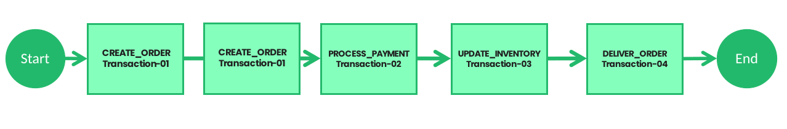

Introduction Last updated: 2019-06-01
In this section, you will get the architecture of this framework. other than that, you will get what are the limitations you have to face when you are going to use microservice architecture and how overcome those difficulties by using StackSAGA framework.
Microservice Architecture
Before dive in to the framework let's have the basic idea of microservice architecture.
A microservices architecture consists of a collection of small, autonomous services. Each
service is self-contained and should implement a single business capability within a bounded
context. A bounded context is a natural division within a business and provides an explicit
boundary within which a domain model exists.
What are microservices?
Microservices are a modern approach to software whereby application code is delivered in
small, manageable pieces, independent of others.
read more through spring microservices.
Database per Service Pattern
One of the benefits of microservice architecture is that it lets us choose the technology stack per service. For instance, we can decide to use a relational database for service A and opt for a NoSQL database for service B. This model lets the services manage domain data independently on a data store that best suites its data types and schema. Further, it also lets the service scale its datastores on-demand and insulates it from the failures of other services. However, at times a transaction can span across multiple services, and ensuring data consistency across the service database is a challenge. In the next section, let us examine the challenge of distributed transaction management with an example.
Distributed Transaction
To demonstrate the use of distributed transactions, we’ll take an example of an e-commerce application that processes online orders and is implemented with microservice architecture. There is a microservice to create the orders, one that processes the payment, another that updates the inventory and the last one that delivers the order. Each of these microservices performs a local transaction to implement the individual functionalities:
To ensure a successful order processing service, all four microservices must complete the individual local transactions. If any of the microservice fails to complete its local transaction, all of the completed preceding transactions should roll back to ensure data integrity. This is an example of a distributed transaction as the transaction boundary crosses multiple services and databases.
Challenges of Distributed Transaction
In the previous section, we’ve provided a real-life example of a distributed transaction. Distributed transactions in a microservice architecture pose two key challenges. The first one is maintaining ACID. To ensure the correctness of a transaction, it must be atomic, consistent, isolated, and durable (ACID). The atomicity ensures that all or none of the steps of a transaction should complete. Consistency takes data from one valid state to another valid state. Isolation guarantees that concurrent transactions should produce the same result that sequentially transactions would have produced. Lastly, durability means that committed transactions remain committed irrespective of any type of system failure. In a distributed transaction scenario, as the transaction spans several services, it always remains a key concern to ensure ACID. The second one is managing the transaction isolation level. It specifies the amount of data that is visible in a transaction when the other services access the same data simultaneously. In other words, if one object in one of the microservice is persisted in the database while another request reads the data, should the service return the old or new data?
Introduction to Saga
What Is Saga Architecture Pattern?
The Saga architecture pattern provides transaction management using a sequence of local transactions. A local transaction is the unit of work performed by a saga participant. Every operation that is part of the Saga can be rolled back by a compensating transaction. Further, the Saga pattern guarantees that either all operations are complete successfully or the corresponding compensation transactions are run to undo the work previously completed. In the Saga pattern, a compensating transaction must be idempotent and retryable. These two principles ensure that a transaction can be managed without any manual intervention. The Saga Execution Coordinator (SEC) ensures guarantees these principles:

The above diagram shows how to visualize the Saga pattern for the previously discussed online order processing scenario.
Classification of SAGA transactions
According to the behaviours of the transaction we can mainly identify 3 transaction types that can be happened when we use saga.
- Fully success transaction
- Rollback/Compensation/Revert success transaction
- Rollback/Compensation/Revert failed transaction
01 : Fully success transaction
As we discussed earlier, we had used number of microservices for doing one single execution. Just assume we have used 5 microservices to be executed and all of them have been worked without any errors. Then there is no revert processes have been executed. That's means, all the microservices are up and running and there haven't been occurred exceptions internally inside each microservice.
02 : Rollback/Compensation/Revert success transaction
In this time, An exception has occurred when one of microservices get execute. Just assume coordinator has been executed 3 microservices successfully but at the 4th one, an error has occurred due to a network exception or whatever internal exception that the microservices has been thrown. Now the coordinator has to execute revert function regarding the all microservices that executed earlier. So the coordinator will start to execute all the revert functions one by one as a sequence. If those revert functions has been executed successfully, this kind of transactions are going to these types. Simply we did a set of transactions but unfortunately got an error but all the revert processes are done successfully.
03 : Rollback/Compensation/Revert failed transaction
In this time, the coordinator try to execute the transactions one by one. But while doing the execution, an error get occurred after doing some executions and the coordinator get started to execute all the revert processes that regards to the microservices that previously executed. But unfortunately while doing the revert executions an error get occurred because of a network issues. (Network issues means it can be happened because of there is no endpoint in active at that time or kind of actual network problems)
Section Item 1.4
Vivamus efficitur fringilla ullamcorper. Cras condimentum condimentum mauris, vitae facilisis leo. Aliquam sagittis purus nisi, at commodo augue convallis id. Sed interdum turpis quis felis bibendum imperdiet. Mauris pellentesque urna eu leo gravida iaculis. In fringilla odio in felis ultricies porttitor. Donec at purus libero. Vestibulum libero orci, commodo nec arcu sit amet, commodo sollicitudin est. Vestibulum ultricies malesuada tempor.
Pagination Example:
Vivamus efficitur fringilla ullamcorper. Cras condimentum condimentum mauris, vitae facilisis leo. Aliquam sagittis purus nisi, at commodo augue convallis id. Sed interdum turpis quis felis bibendum imperdiet. Mauris pellentesque urna eu leo gravida iaculis. In fringilla odio in felis ultricies porttitor. Donec at purus libero. Vestibulum libero orci, commodo nec arcu sit amet, commodo sollicitudin est. Vestibulum ultricies malesuada tempor.
Section Item 1.5
Vivamus efficitur fringilla ullamcorper. Cras condimentum condimentum mauris, vitae facilisis leo. Aliquam sagittis purus nisi, at commodo augue convallis id. Sed interdum turpis quis felis bibendum imperdiet. Mauris pellentesque urna eu leo gravida iaculis. In fringilla odio in felis ultricies porttitor. Donec at purus libero. Vestibulum libero orci, commodo nec arcu sit amet, commodo sollicitudin est. Vestibulum ultricies malesuada tempor.
Section Item 1.6
Vivamus efficitur fringilla ullamcorper. Cras condimentum condimentum mauris, vitae facilisis leo. Aliquam sagittis purus nisi, at commodo augue convallis id. Sed interdum turpis quis felis bibendum imperdiet. Mauris pellentesque urna eu leo gravida iaculis. In fringilla odio in felis ultricies porttitor. Donec at purus libero. Vestibulum libero orci, commodo nec arcu sit amet, commodo sollicitudin est. Vestibulum ultricies malesuada tempor.